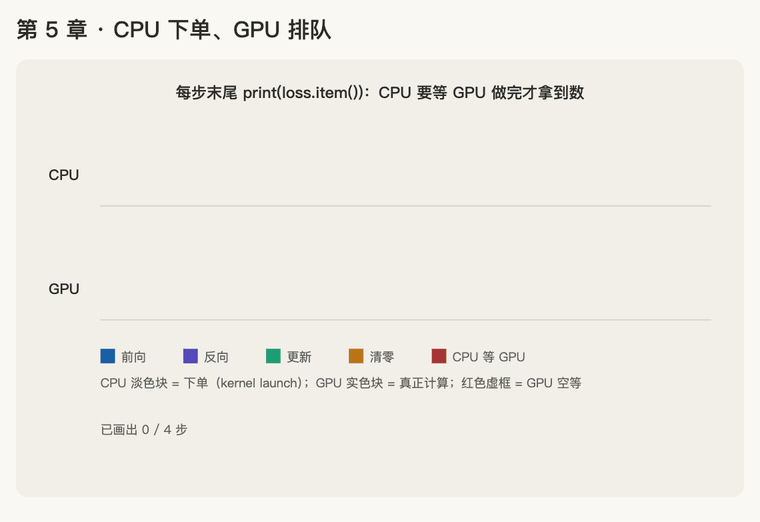

第 5 章 · GPU 语义：下单就走、何时会等、显存怎么借
本章回答：为什么 GPU 上的代码"跑得飞快"却测不准时间？哪些写法会让 CPU 停下来等 GPU？stream 是什么？
nvidia-smi看到的显存为什么比张量实际用的多？
讲解日期：2026-11-14 · 上一章：第 4 章 Autograd · 下一章：第 6 章 torch.compile
对应原文：00-overview.md §2.4；官方文档 CUDA semantics（〔在线〕docs.pytorch.org/docs/stable/notes/cuda.html）；AISPE ch13「使用 CUDA 流实现并发」（ai-infra/materials/ai-systems-performance-engineering/docs/chapters/ch13.md第 1007–1173 行）；本章实测数字来自本机 Apple M 系列 GPU（MPS，torch 2.15.0），CUDA 上规律相同本章缩写：CUDA = Compute Unified Device Architecture（计算 / 统一 / 设备 / 架构，NVIDIA 的 GPU 计算平台）；MPS = Metal Performance Shaders；kernel（内核）= 在 GPU 上跑的一个函数；smi = System Management Interface（系统 / 管理 / 接口）；全部缩写见 附录 · 缩写与术语表
讲解
第一步：CPU 下单就走，GPU 排队慢慢做（2026-11-14）
类比：奶茶店。 你（CPU）在柜台点单，店员把单子挂到后厨的轨道上，马上对你说"好了，下一位"。奶茶其实还没做，后厨（GPU）按顺序一杯杯做。
PyTorch 在 GPU 上就是这样：c = a @ a 只是把"做一次矩阵乘法"这张单子（一次 kernel launch，内核启动）挂进队列，Python 立刻往下走。
实测（本机 MPS，4096 × 4096 矩阵乘法）：
t0 = time.perf_counter()
c = a @ a
t1 = time.perf_counter() # 下单用时：0.15 ms
torch.mps.synchronize() # 等后厨做完（CUDA 上是 torch.cuda.synchronize()）
t2 = time.perf_counter() # 真正做完：10.2 ms
下单 0.15 毫秒，做完 10.2 毫秒，差了 约 70 倍。所以"不等就掐表"测出来的只是下单时间。
正确的计时：
- 掐表前后都
synchronize()； - 或者用 GPU 自己的计时器
torch.cuda.Event(enable_timing=True)，在队列里插两个"打卡点"； - 先跑几次热身（第一次会有初始化、分配内存等额外开销）；
- 更省事：
torch.utils.benchmark.Timer或triton.testing.do_bench（第 36 章），它们帮你做好这些。
一句话：GPU 运算是异步的：CPU 挂单就走；测时间一定要等 GPU 做完。
第二步：同步点——让 CPU 停下来等的写法（2026-11-14）
异步的好处是 CPU 可以一直往队列里续单，GPU 永远有活干。但有些写法需要拿到 GPU 算出来的数，CPU 只能停下来等队列清空，这叫同步点（sync point）：
| 写法 | 为什么要等 |
|---|---|
loss.item()、t.tolist()、float(t) |
要把数拿回 Python |
print(t) |
要显示数 |
t.cpu()、t.numpy() |
拷回 CPU 内存 |
if t > 0:、while (t != 0).any(): |
Python 的 if 要一个真假值 |
t.nonzero()、torch.unique(t)、x[mask] |
输出有多少个元素取决于数据，CPU 要知道才能分配结果 |
torch.cuda.synchronize() |
明确要求等 |
（.item() 那次实测：下单 + 等待 + 拿数 = 12.4 ms，和第一步的 10.2 ms 同一个量级：就是在等矩阵乘法做完。）
为什么同步点伤性能：等的那一刻 GPU 队列被"吃空"了。CPU 拿到数后才开始给下一步下单，而 Python 下单本身有开销，GPU 就会空等一小段。训练里每步都 print(loss.item())，每步都会出现这样的空隙（第 24 章在时间线上能直接看到）。
改法：日志每 N 步打一次；数据相关的 if 用 torch.where 改写（第 12 章）；需要在 GPU 上累计的指标就留在 GPU 上，最后再取。
一句话：要"拿数回来"的写法都是同步点；同步一次，GPU 就可能空等一次。
第三步：stream——多条后厨轨道（2026-11-14）
stream（流） = 一条队列。同一条 stream 里的单子严格按顺序做；不同 stream 之间可以同时做。
默认所有运算都在"默认 stream"上。多开一条 stream 的典型用途：一边算这一批，一边把下一批数据从 CPU 拷进显存。
copy_stream = torch.cuda.Stream()
with torch.cuda.stream(copy_stream):
next_x = cpu_batch.to("cuda", non_blocking=True) # 在另一条轨道上拷
loss = model(x) # 默认轨道上算
torch.cuda.current_stream().wait_stream(copy_stream) # 用 next_x 之前，等拷贝那条轨道
要点：
- 跨 stream 用数据时必须显式"等"（
wait_stream或Event），不然可能读到还没拷完的数； non_blocking=True的拷贝要配合 pinned memory（锁页内存）：CPU 内存先"钉住"不让操作系统挪走，GPU 才能直接异步来取（DataLoader 的pin_memory=True就是干这个，第 8 章）；- 分布式训练里，通信（NCCL）也跑在单独的 stream 上，所以能和反向计算重叠（第 18 章）。
AISPE ch13 第 1021–1097 行有完整的"计算流 + 传输流"预取例子，第 1098–1173 行讲用 event 同步。
一句话：一条 stream 一条队列，同一条按顺序、不同条可并行；跨条用数据要先等。
第四步：缓存分配器——借来的显存不急着还（2026-11-14）
向显卡驱动要显存（cudaMalloc）和还显存（cudaFree）都很慢，还会让 GPU 同步。训练每一步都会创建、释放大量临时张量，如果每次都去找驱动，会慢得不行。
PyTorch 的做法：自己开个"显存仓库"（caching allocator，缓存分配器）。 张量释放后，那块显存不还给驱动，留在仓库里，下次有人要同样大小的就直接给。
所以有两个数：
| 函数（CUDA） | MPS 上对应 | 意思 |
|---|---|---|
torch.cuda.memory_allocated() |
torch.mps.current_allocated_memory() |
张量真正在用的 |
torch.cuda.memory_reserved() |
torch.mps.driver_allocated_memory() |
仓库从驱动借来的总量（nvidia-smi 看到的接近这个） |
实测（本机 MPS）：两个 4096 × 4096 的 float32（各 64 MB）时，在用 128 MB；del c 后在用降到 64 MB，但从驱动借来的仍然是约 1024 MB，没有还。
这不是内存泄漏。真想还给驱动用 torch.cuda.empty_cache()（一般不需要，下次又要借，反而慢）。
碎片问题：仓库里有很多零散的小空块，加起来够大，但没有一块连续够大的，新请求还是会失败，报 out of memory（OOM，显存不够）。可以设环境变量 PYTORCH_CUDA_ALLOC_CONF=expandable_segments:True，让分配器用可扩展的大段，减少碎片。看谁占了显存，第 27 章用 memory snapshot。
一句话：PyTorch 有个显存仓库，用完不还驱动、留着复用；"在用"和"借来"是两个数，差额不是泄漏。
动画演示：CPU 下单、GPU 排队

可交互版：animations/05-async-queue.html。开关：每步 loss.item()：开 / 关。
怎么看：
- 上面一行是 CPU 时间线，下面是 GPU 时间线；CPU 每下一单，GPU 队列里多一个方块；
- 关掉
.item()时，CPU 一路往前下单，GPU 方块首尾相接，没有空隙； - 打开
.item()：每步末尾 CPU 停下来等（红色），GPU 做完后要等 CPU 下一单才开工，时间线上出现空隙； - 右下角统计 GPU 忙碌占比。
练习与作答记录
题 1：同事这样测一次矩阵乘法用了多久，结果 0.15 ms。哪里不对？怎么改？
t0 = time.perf_counter(); c = a @ a; print(time.perf_counter() - t0)
作答：（待作答）
题 2：下面训练循环里哪几行是同步点？
for x, y in loader:
x, y = x.cuda(non_blocking=True), y.cuda(non_blocking=True)
loss = F.cross_entropy(model(x), y)
loss.backward(); opt.step(); opt.zero_grad()
if loss.item() > 10: print("loss 爆了", loss)
作答：（待作答）
题 3：训练中途 memory_allocated() 是 20 GB、memory_reserved() 是 30 GB，nvidia-smi 显示用了约 31 GB。差出来的 10 GB 是什么？是泄漏吗？
作答：（待作答）
口诀
CPU 挂单就走，GPU 排队慢做；掐表之前先同步；
拿数回来就要等，item、if都是坎；
一条 stream 一条队，跨队用数先等待；显存仓库借了不还，在用和借来是两个数。
本章复习卡片
- P13（GPU 异步：kernel launch 只是挂单；实测下单 0.15 ms vs 做完 10.2 ms；计时要 synchronize / Event / 热身）
- P14（同步点清单：item / tolist / print / cpu / Python if / nonzero / 布尔索引 / synchronize；为什么伤性能）
- P15（stream：同一条按序、不同条可并行；跨 stream 要 wait；non_blocking 要配 pinned memory）
- P16（caching allocator：allocated vs reserved；empty_cache；碎片与 expandable_segments）
附录 · 延伸阅读
推荐阅读
| 读什么 | 读哪里 | 读它为了什么 |
|---|---|---|
| ★ 官方文档 CUDA semantics | "Asynchronous execution"、"CUDA streams"、"Memory management" 三节（〔在线〕） | 本章四步的官方版 |
| ★ AISPE 第 13 章 | ch13.md 第 1007–1173 行（CUDA 流、event 同步）、第 1377 行起（内存分析） |
带代码的 stream 预取和显存调优 |
| CUDA 讲义 第 4 章 主机与设备、第 26 章 streams / graphs | 全章 | 从 CUDA C++ 角度看同一件事 |
| Zachary DeVito「A guide to PyTorch's CUDA Caching Allocator」 | 全文（〔在线〕zdevito.github.io） | 分配器内部：block 拆分、大小分档、碎片 |
数学原理
- GPU 利用率 ≈ GPU 忙的时间 ÷ 总时间。每步一个同步点、空隙 \(g\)、计算时间 \(c\) 时，利用率约 \(\frac{c}{c + g}\)。\(c\) 越小（模型小、batch 小），同步点越伤。
- 本机实测矩阵乘法吞吐：\(2 \times 4096^3 \approx 1.37 \times 10^{11}\) 次浮点运算 ÷ 10.2 ms ≈ 13 TFLOP/s（第 23 章算 MFU 时会用到这种算法）。
公式 / 代码清单
| 写法 | 意思 |
|---|---|
torch.cuda.synchronize() / torch.mps.synchronize() |
等 GPU 队列清空 |
torch.cuda.Event(enable_timing=True) + record() + elapsed_time() |
GPU 上计时 |
torch.cuda.Stream() / with torch.cuda.stream(s): / wait_stream |
开新队列 / 在上面下单 / 等它 |
pin_memory() + .to(dev, non_blocking=True) |
异步拷贝 |
memory_allocated() / memory_reserved() / empty_cache() |
在用 / 借来 / 还给驱动 |
PYTORCH_CUDA_ALLOC_CONF=expandable_segments:True |
减少碎片 |
代码对照：把本章的数字用代码算一遍
用 torch 把讲义里的数字跑一遍。代码在仓库本地
pytorch-deep-dive/solutions/chapter-code/ch05_cuda_semantics.py，配套测试tests/test_ch01_06.py；同一章的 notebook：notebooks/ch05_cuda_semantics.ipynb（讲解和代码放在一起，一格一格边读边跑）。Mac 上直接能跑（Mac 上用 MPS 演示，没有 GPU 时这两项返回 None）：
bash cd pytorch-deep-dive/solutions/chapter-code uv run python ch05_cuda_semantics.py # 一步一步打印 uv run pytest tests/test_ch01_06.py
讲义 ↔ 代码：
| 讲义 | 公式 / 说法 | 写法 | 跑出来 |
|---|---|---|---|
| 第一步 下单 vs 做完 | 不同步掐表只测到下单 | launch_vs_done() |
约 0.14 ms vs 10.8 ms（本机 MPS） |
| 第四步 缓存分配器 | 在用 vs 借来 | allocator_demo() |
128 MB → del 后 64 MB |
关键几行：
t0 = time.perf_counter(); a @ a
t1 = time.perf_counter() # 只是下单
torch.mps.synchronize() # CUDA 上是 torch.cuda.synchronize()
t2 = time.perf_counter() # 真正做完
代码里才看得到的 2 件事：
- MPS 和 CUDA 的显存函数名字不同：
torch.mps.current_allocated_memory对应torch.cuda.memory_allocated。 - 数字每次略有不同：下单约 0.1–0.2 ms、做完约 10 ms，测试只核对"做完远大于下单"。
自己改一改（不影响练习答案）：
- 把 n 从 4096 改成 1024，看下单时间变不变、做完时间变多少。
- 在
launch_vs_done里把a @ a换成连续 10 次，看下单时间怎么涨。